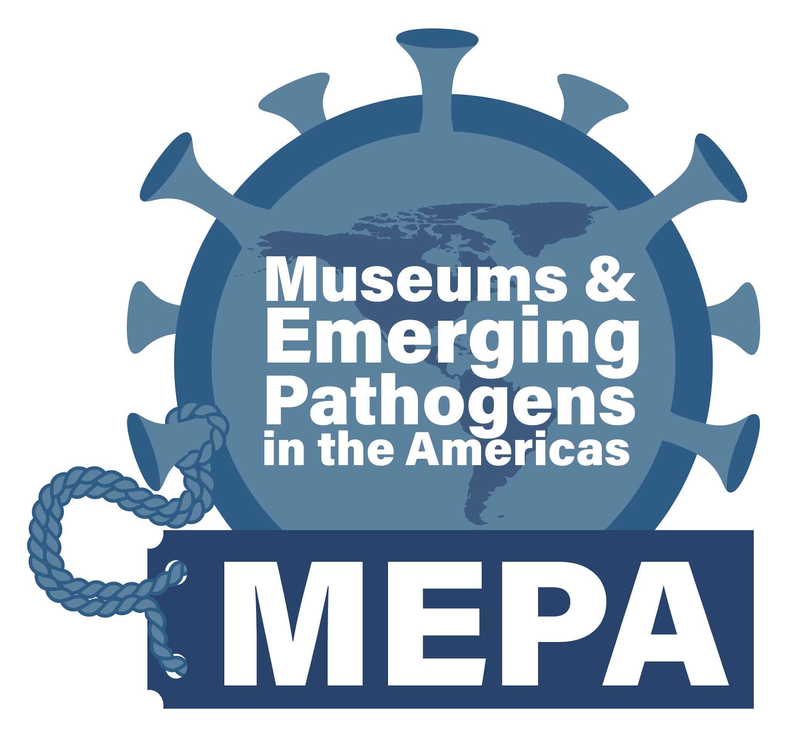

Field+Genomics Workshop At-A-Glance:
- 📅 Timing: October 28 - November 6th, 2024
- ⏳ Duration: 9 days
- 🗣️ Language: Primarily English (Spanish assistance provided)
- 📍 Location: Reserva Otongachi (~2hrs outside of Quito, Ecuador)
- 📅 Application Deadline: October 2, 2024
- 💵 Program Fee: Food, lodging, and travel sponsored for Latin American Participants.
Museums and Emerging Pathogens in the Americas (MEPA)
MEPA is a virtual Community of Practice and a branch of Project ECHO (Extensions for Community Healthcare Outcomes) that aims to develop robust connections between natural history museum biorepositories and biomedical initiatives across the Americas. Its mission is to improve the sustainability, rigor, and replicability of pathogen surveillance in wild animals.
In collaboration with QCAZ (the Museum of Zoology of the Pontificia Universidad Católica del Ecuador [PUCE]) and CISeAL (Center for Health Research in Latin America, PUCE), MEPA is leading a Field+Genomics Workshop in Ecuador in 2024. The workshop will train participants from diverse countries, backgrounds, and career stages in voucher-backed field surveillance and holistic preservation of mammalian host specimens. Participants will conduct field-based surveillance of small mammals, perform DNA extractions, library preparation, Nanopore Adaptive Sampling, and basic bioinformatics in the field.
Workshop Section Descriptions
Organizers
Jocelyn Colella, PhD
MEPA Co-founder Curator of Mammals, University of Kansas Biodiversity Institute Assistant Prof. Ecology & Evolutionary Biology Evolutionary genomicist • Conservationist • Outdoors-woman Apprendiendo Español.
Joseph Cook, PhD
Curator of Mammals at the Museum of Southwestern Biology and Distinguished Professor of Biology at the University of New Mexico. Conservationist • MEPA co-founder • Grandpa of 2.
Alejandra Camacho, PhD
Mammal Collection Manager at QCAZ Museo Zoología at the Pontificia Universidad Católica del Ecuador. Mammalogist • MEPA organizational team member • Ecuadorian
Carlos Carrion Bonilla, PhD
Independent consultant. Chiropter-ologist • Field biologist • Proud dad
Mackenzie Grover
Doctoral student in the Colella Lab at the University of Kansas Biodiversity Institute. Parasitologist • MEPA Member • Loves Dogs
John Dunnum, PhD
Mammal Collection Manager at the Museum of Southwestern Biology, University of New Mexico. Mammalogist • Neotropical rodent enthusiast • Futbol player
Marlon Cobos, PhD
Postdoctoral Researcher in the Colella Lab at the University of Kansas Biodiversity Institute. Disease ecologist • Bioinformatician • Ecuadorian
Santiago Burneo, PhD
Curator of Mammals at QCAZ Museo Zoología at the Pontificia Universidad Católica del Ecuador. Mammalogist • MEPA member • Collections advocate
Ben Wiens
Doctoral Candidate in the Colella Lab at the University of Kansas biodiversity Institute. Mammalogist • Evolutionary genomicist • Vole expert
Alex Hey
Masters student in the Colella Lab at the University of Kansas Biodiversity Institute. Wildlife biologist • Nanopore expert • From Chicago
Collaborating Institutions
-
 University of Kansas
Biodiversity Institute
University of Kansas
Biodiversity Institute
-
 Pontificia Universidad Católica del Ecuador
Zoology Museum
Pontificia Universidad Católica del Ecuador
Zoology Museum
- University of New Mexico Museum of Southwestern Biology
- Centro de Investigación para la Salud en América Latina (CISeAL)
Collaborative Organizational Support
-

MEPA:
Museums and Emerging Pathogens in the Americaas